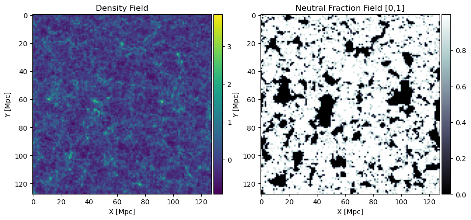
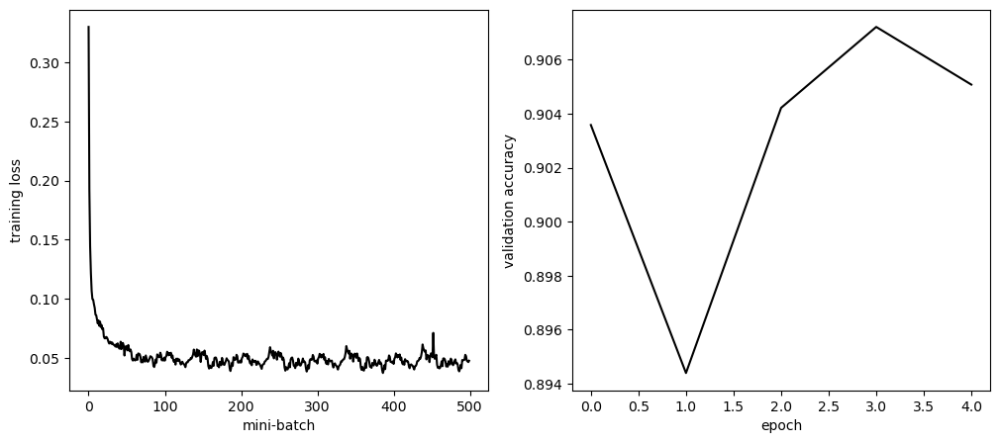
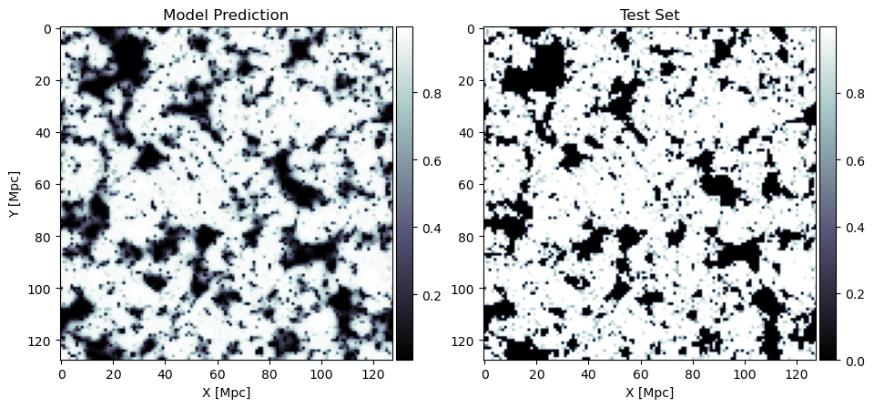
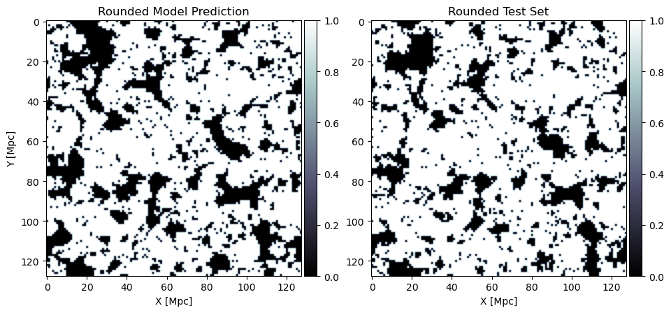
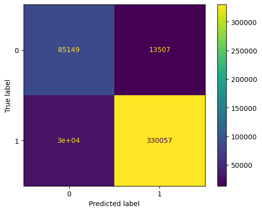
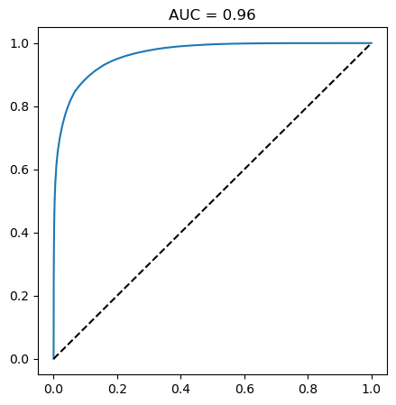

Training a U-Net for cosmological image segmentation
This demo uses the py21cmnet package (built on PyTorch) and the outputs of a real cosmological simulation (from 21cmFAST) to train a UNet. The goal is to take the starting 2D matter field distribution and predict where in the simulation the baryonic field would be ionized. This is in effect emulating the process of cosmological radiative transfer, which is generally the most computationally expensive component of large-scale cosmological simulations. See also arxiv:2102.06713 for another recent implementation of this approach.
%matplotlib inline
import numpy as np
import matplotlib.pyplot as plt
import torch
from sklearn import metrics
import os
import py21cmnet
from py21cmnet.data import DATA_PATH
from py21cmnet.config import CONFIG_PATH
torch.set_default_dtype(torch.float32)
# can toggle between CPU, Apple-GPU, NVIDIA-GPU
torch.set_default_device('cpu')
#torch.set_default_device('mps')
#torch.set_default_device('cuda')
1. Visualize the data
Let’s load the cosmological simulation data and visualize the problem we are tasked with. Here we will use a small dataset included with the py21cmnet package that comes from a real cosmological simulation. This includes a single 128 x 128 x 128 3D cosmological simulation. We treat each of the 128 “slices” of the cube as the full dataset of 2D images. We will use 100 of these as our training set and 28 as our test set. In a production setting, we would use larger and more diverse datasets (e.g. changing parameters of the simulation itself, including the random seed of the simulation).
# load a dataset
fname = os.path.join(DATA_PATH, "train_21cmfast_basic.h5")
X, y = py21cmnet.utils.read_test_data(fname, ndim=2)
# only use the first channel in X and y
X = X[:, :1]
y = y[:, :1]
# visualize the data
fig, axes = plt.subplots(1, 2, figsize=(11, 6))
cax = axes[0].imshow(X[0,0].cpu())
axes[0].set_title('Density Field')
axes[0].set_xlabel('X [Mpc]'); axes[0].set_ylabel('Y [Mpc]')
fig.colorbar(cax, ax=axes[0], fraction=0.0473, pad=.01)
cax = axes[1].imshow(y[0,0].cpu(), cmap='bone')
axes[1].set_title('Neutral Fraction Field [0,1]')
axes[1].set_xlabel('X [Mpc]'); axes[1].set_ylabel('Y [Mpc]')
fig.colorbar(cax, ax=axes[1], fraction=0.0473, pad=.01);

Figure 1 | Above we show the dark matter overdensity field (left) from the simulation at a given snapshop in redshift, alongside the corresponding hydrogen neutral fraction field (right) at the same redshift. Notice the general correspondance to large values in delta (left) and ionized regions in x_HI (right): by-eye we can see that a smoothed version of the left might look like the inverse of the right. Note that because we are plotting the neutral fraction field on the right, ionized regions correspond to when x_HI = 0.
Note: delta can take on any non-negative value whereas x_HI is bounded between [0, 1], with 0 implying the field is ionized and 1 implying the field is not ionized. Also note that partial ionization is possible and thus x_HI is not stricly a binary classification, although due to the localized nature of ionization fronts we could make this assumption with minimal impact.
Also notice that the images above are simulated with peroidic boundary conditions, thus we can “roll” the maps left-right or up-down and they will still look continuous in nature. This data augmentation technique will be important when training our data.
The task:
Our task is the develop a model that takes as input the left map, and then outputs the right map, with the outputs bounded between [0, 1].
2. Build and Train a 2D U-Net Model
The model we will use is a deep convolutional neural network (CNN), specifically an auto-encoder variant known as U-Net. The U-Net was succesful in improving the ability of CNN to be used for image segmentation, with its key feature of using skip (or “residual”) connections, which helps the network retain information from earlier layers and improve performance.

Figure 2 | A basic model for a CNN U-Net model (derived from its "U" structure). The input image is down sampled into a lower dimensional latent space (bottom), which is then up sampled back to its original dimensionality. Convolutions and non-linear activiations are applied between layers to improve expressivity, and dropout is used for regularization. The final output is passed through a SoftMax to restrict it to the range [0, 1].
Model specifications: here, we will use a pre-designed “vanilla” U-Net model that comes default with the py21cmnet package. However, this can be customized in any way, as we show below by changing the input and output channels from 2 (default) to 1. In this default model there are two convolution and pooling steps in the encoder, and two convolution and upsampling steps in the decoder.
# load a vanilla model with skip connections
params = py21cmnet.utils.load_autoencoder_params(os.path.join(CONFIG_PATH, "autoencoder.yaml"),
os.path.join(CONFIG_PATH, "autoencoder2d_defaults.yaml"))
# modify for the dataset we are using with only 1 input (density field) and output (ionization field) channel
params['encoder_layers'][0]['conv_layers'][0]['conv_kwargs']['in_channels'] = 1
params['decoder_layers'][-1]['conv_layers'][-1]['conv_kwargs']['out_channels'] = 1
params['final_transforms'] = params['final_transforms'][:1]
model = py21cmnet.models.AutoEncoder(**params)
Here is what the first block of the encoder looks like:
model.encoder[0]
Encoder(
(model): Sequential(
(0): ConvNd(
(model): Sequential(
(0): Conv2d(1, 12, kernel_size=(3, 3), stride=(1, 1), padding=(1, 1), padding_mode=circular)
(1): ReLU()
(2): BatchNorm2d(12, eps=1e-05, momentum=0.1, affine=True, track_running_stats=True)
)
)
(1): ConvNd(
(model): Sequential(
(0): Conv2d(12, 12, kernel_size=(3, 3), stride=(1, 1), padding=(1, 1), padding_mode=circular)
(1): ReLU()
(2): BatchNorm2d(12, eps=1e-05, momentum=0.1, affine=True, track_running_stats=True)
)
)
)
(pool): MaxPool2d(kernel_size=2, stride=2, padding=0, dilation=1, ceil_mode=False)
)
Next we need to split the full dataset into a training set and a testing set. Of the 128 slices, we will select a random 100 as the training set and the other 28 as the test set.
# split the data into test and train
np.random.seed(0)
select = np.zeros(len(X), dtype=bool)
select[np.random.choice(np.arange(len(X)), 100, replace=False)] = True
X_train = X[select]
y_train = y[select]
X_test = X[~select]
y_test = y[~select]
Next we put the training data and test into a special BoxDatset object and stick that into a DataLoader. Note that in this case we can keep all data in memory (hence the utils.load_dummy dummy function), but in the case where we can’t then it will stream the training data for each mini-batch.
# load data into a DataLoader: we will augment the images by include a random X & Y "roll"
ds_train = py21cmnet.dataset.BoxDataset(X_train, y_train,
py21cmnet.utils.load_dummy,
transform=py21cmnet.dataset.Roll(ndim=2))
dl_train = torch.utils.data.DataLoader(ds_train, batch_size=1)
# note that we do not perform augmentation on test set!
ds_test = py21cmnet.dataset.BoxDataset(X_test, y_test,
py21cmnet.utils.load_dummy)
dl_test = torch.utils.data.DataLoader(ds_test, batch_size=len(X_test))
# define an accuracy function
def acc_fn(pred, true):
# binarize the classes
pred = pred.round()
true = true.round()
return (pred == true).sum() / pred.numel()
%%time
# train the model with the Adam optimizer for two epochs
info = py21cmnet.utils.train(model, dl_train, torch.nn.MSELoss(reduction='mean'), torch.optim.Adam, verbose=False,
optim_kwargs=dict(lr=0.01), Nepochs=5, valid_dloader=dl_test, acc_fn=acc_fn)
CPU times: user 19.9 s, sys: 31.4 s, total: 51.3 s
Wall time: 18.6 s
Below we show the training loss as a function of mini-batch, and the accuracy against the test set over epochs.
fig, axes = plt.subplots(1, 2, figsize=(12, 5))
axes[0].plot(info['train_loss'], c='k')
axes[0].set_xlabel('mini-batch'); axes[0].set_ylabel('training loss')
axes[1].plot(info['valid_acc'], c='k')
axes[1].set_xlabel('epoch'); axes[1].set_ylabel('validation accuracy')

Figure 3 | The training loss per mini-batch, which converges to a stable floor after a couple of epochs, and the corresponding accuracy against the validation (or test) set, which also roughly converges after a single epoch. This early convergence probably is a function of the small dataset and small model size used in this demonstration.
To better assess visually how the model is performing we can plot the outputs.
with torch.no_grad():
y_pred = model(X_test)
fig, axes = plt.subplots(1, 2, figsize=(11, 6))
cax = axes[0].imshow(y_pred[0,0].cpu(), cmap='bone')
axes[0].set_title('Model Prediction')
axes[0].set_xlabel('X [Mpc]'); axes[0].set_ylabel('Y [Mpc]')
fig.colorbar(cax, ax=axes[0], fraction=0.0473, pad=.01)
cax = axes[1].imshow(y_test[0,0].cpu(), cmap='bone')
axes[1].set_title('Test Set')
axes[1].set_xlabel('X [Mpc]');
fig.colorbar(cax, ax=axes[1], fraction=0.0473, pad=.01);

Figure 4 | The predicted neutral field (left) and the truth (right) for an image in the validation set.
We can see that the model has a “fuzziness” relative to the test data, which comes from the model’s inability to fully capture the sharpness of the ionization fronts. If we round the predictions and the data to either 0 or 1 (i.e. its ability to determine whether its mostly ionized or mostly neutral) we see better agreement.
fig, axes = plt.subplots(1, 2, figsize=(11, 6))
cax = axes[0].imshow(y_pred[0,0].round(), cmap='bone')
axes[0].set_title('Rounded Model Prediction')
axes[0].set_xlabel('X [Mpc]'); axes[0].set_ylabel('Y [Mpc]')
fig.colorbar(cax, ax=axes[0], fraction=0.0473, pad=.01)
cax = axes[1].imshow(y_test[0,0].round(), cmap='bone')
axes[1].set_title('Rounded Test Set')
axes[1].set_xlabel('X [Mpc]');
fig.colorbar(cax, ax=axes[1], fraction=0.0473, pad=.01);

Figure 5 | The predicted class, ionized or neutral (left), and the true class (right) for an image in the validation set.
In this case, the confusion matrix and AUC look like this
conf_mat = metrics.confusion_matrix(y_test.round().ravel(), y_pred.round().ravel())
disp = metrics.ConfusionMatrixDisplay(conf_mat, )
disp.plot()

Figure 6 | Treating the problem as a binary classification task, we can construct a confusion matrix, shown above.
# get roc and auc
fpr, tpr, thresh = metrics.roc_curve(y_test.round().ravel(), y_pred.ravel())
auc = metrics.auc(fpr, tpr)
plt.figure(figsize=(5,5))
plt.plot(fpr, tpr)
plt.plot([0,1],[0,1], c='k', ls='--')
plt.title("AUC = {:.2f}".format(auc))

Figure 7 | The corresponding Area-Under-ROC-Curve metric, showing that our model performs quite well in the limit of treating the problem as a binary classification task.
In other words, although the model is adequate at predicting the continuous neutral fraction field, it fairly good at assigning a binary class to the field (either mostly neutral or mostly ionized). Nevertheless, the model can undoubtedly be improved with a larger dataset and a deeper network.
Enjoy Reading This Article?
Here are some more articles you might like to read next: